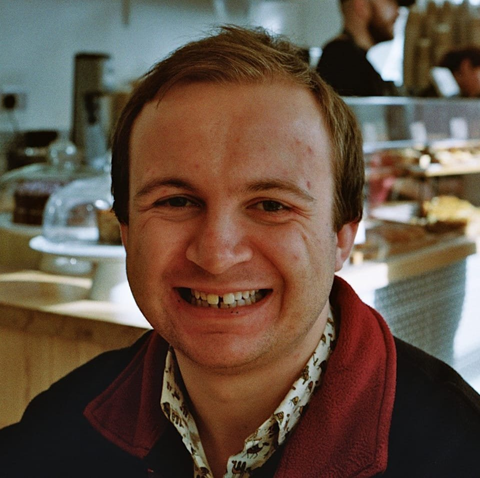

Hi, I'm Huw Day!
I'm a data scientist at the Jean Golding Institute (JGI) at the Univeristy of Bristol.
Before that, I did my PhD in Mathematics under Professor Nina Snaith at the University of Bristol. My thesis was titled "Stochastic Models for Eukaryotic DNA Replication". My PhD involved developing a basis understanding of the genetics of DNA replication. I developed models and derived analytical results (i.e. pen and paper) with techniques from random matrix theory and integrable probability, as well simulating proposed models in Python and comparing them with actual data. Before that in my four years of undergraduate studies at Bristol I studied lots of probability, analysis and number theory.
Whilst I was doing my PhD I go involved with writing the blog for and co-organising the Data Ethics Club which is an an online fortnightly discussion group on all things Data Ethics. It's open to anyone with a WiFi connection so go and check out the website to join the mailing list, read writeups of previous discussions and have a look at our extensive reading list.
My current role at the JGI involves support researchers across the University of Bristol with data science projects. This can involve adding key data science skills (which I sometimes learn on the fly) to fill a gap in certain teams or providing an extra pair of hands on existing teams. I have worked with clinical genetists, climate scientists, policy researchers and AI lecturers on a range of projects involving skills such as data visualisation, deep learning for computer vision tasks, NLP for topic modelling and dashboard building for public communication. I am currently the Ask-JGI Lead, which means I manage a helpdesk of 7 PhD students who are paid part time to support researchers across Bristol university with their data science queries. They're an amazing team and if you're based at Bristol University and haven't already taken advantage of your day of free data science support, what are you waiting for? This work frequently involves helping researchers develop ideas into grant applications.
I have extensive teaching experience from my masters, PhD and current role. I have led tutorials in probability, linear algebra and random matrix both in person and online throughout the pandemic. I am currently involved in teaching Python courses to masters students and PhD students, walking students through an introduction to Python, basic data analysis with Pythons and getting to grips with scikit learn for regression and ML models.